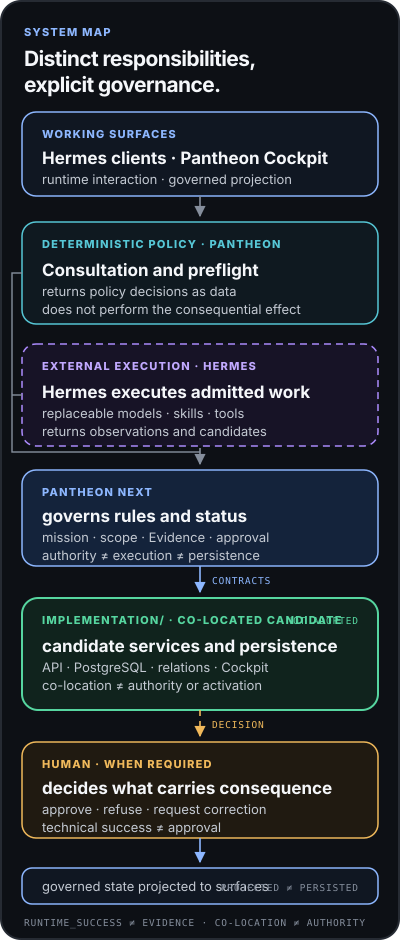
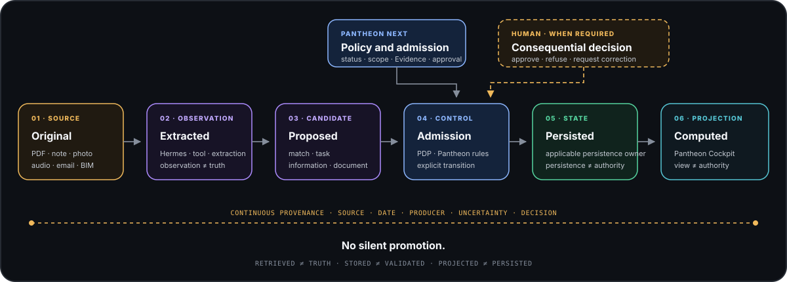

AI is becoming a function of the working environment.
Its presence does not make it the project’s method or authority.

Architects · project teams · professional intelligence
Your way of designing should remain your own.
Pantheon helps each practice structure the professional context in which AI can contribute to work: projects, knowledge, methods, intentions, constraints, and decisions.
AI can accelerate research, analysis, drafting, or design. Pantheon helps preserve the thread that enables the professional to understand, weigh trade-offs, and decide.
AI is already in the project
A growing share of design, rendering, research, word-processing, spreadsheet, email, and professional software includes artificial-intelligence functions.
AI also enters through other project participants. A colleague may use it to prepare an analysis. A project owner may use it to formulate a request. A consultant, contractor, or supplier may send material that has already been searched, summarised, or reformulated by AI.
Its presence does not make it the project’s method or authority.
Context, provenance, and scope become as important as the answer itself.
The question is therefore no longer only, “Do I use AI?” It becomes, “How do I work properly when AI intervenes at several points in the project?”
Why Pantheon?
For many tasks, use them. These assistants are highly effective for drafting, summarising, researching, analysing, or thinking through a question.
Pantheon becomes useful when those uses must join the practice’s durable work. A project should not depend on one conversation. A method should not disappear when the model changes. A professional decision should not become just another answer buried in chat history.
A conversation can be extremely useful without becoming the durable state of the project.
Sources, methods, intentions, disagreements, and decisions remain connected to the project over time.
You can change AI. Your professional intelligence should not have to start again from zero.
Pantheon
That intelligence already exists. It is distributed across people, projects, knowledge, methods, references, experience, and decisions.
Pantheon does not claim to capture the whole culture of a practice or turn it into an AI model. It helps structure the part that can be made explicit, shared, connected, and transmitted, so people and AI can contribute without erasing the nature of what they contribute.
Retrieving information is not enough to make it true, current, or applicable.
The project retains what was explored, discussed, rejected, or carried forward.
Tools can evolve without every change forcing the practice to reconstruct how it works.
Pantheon does not force consensus. It keeps visible who proposed, checked, accepted, refused, or left an issue open.
A project then transmits more than files. It also retains why a choice was made, which alternatives were explored, and what experience taught the practice. Preserving does not mean freezing: methods must remain able to evolve.
Design
It can analyse a brief, compare variants, simulate, calculate, research references, or propose forms. But design is not merely the solution of an equation.
A project is also shaped by its relationship to place, use, resources, time, and what already exists. It brings technique, economics, feasibility, ecology, ethics, and aesthetics into tension. Professional judgement is precisely the work of navigating dimensions that do not always point to the same answer.
Climate, resources, existing fabric, ground, material, use, and time extend beyond a single performance figure.
A possible solution is not necessarily right for the project owner, users, territory, or those who will build it.
Form, light, proportion, material, emotion, and architectural culture cannot be reduced to a score.
Not everything that matters in a project can necessarily be calculated. And not everything that can be calculated should necessarily decide the project.
An intuition can remain an intention. A calculation remains a result. An AI-produced variant remains a proposal. Pantheon helps preserve these differences through to professional judgement and decision.
From simple to advanced
It is not intended to replace the tools that already work for you. It adds professional continuity around them.
Keep using them for the research, analysis, drafting, and occasional thinking that helps your work.
Pantheon separates durable project context from temporary instructions given to an AI.
Models, knowledge, functions, workflows, skills, and tools can remain specialised and replaceable.
Execution becomes more autonomous. Pantheon preserves the context, limits, and professional scope of the work produced.
As software and agents exchange more work with one another, an answer may pass through several systems before reaching the professional. The more capable that chain becomes, the more explicit provenance, context, and authority need to remain. When producing becomes easy, attention becomes precious.
Who does what?
The Cockpit is the surface where the professional reviews the project and its work states. Pantheon carries the professional framework: context, provenance, statuses, rules, scopes, and decisions.
Hermes is an external, optional execution agent. When used, it can mobilise models and tools to perform a requested task. It is neither Pantheon nor the AI model, and it does not decide what carries professional consequences. AI models — proprietary or local — provide capabilities and remain replaceable.
The professional does more than validate at the end. They set direction, frame the problem, choose what deserves attention, and remain responsible for consequential decisions.
Technical architecture · for a deeper view
Hermes is an external, optional execution agent. It can mobilise models and tools to perform a requested task. The direct path remains available for deterministic operations.

Professional continuity · illustrative example
A new item enters the project, contradicts an earlier state, and then requires verification and a professional decision. Pantheon preserves every step without silent promotion. This is a synthetic example and does not represent a real project.
Received on 9 August 2026.
Site report dated 31 July 2026.
Both assertions remain connected to their respective sources.
Request the test report before validation.
Pantheon does not decide for the professional. It preserves the distinctions required to understand why information, an action, or a decision may be relied on.
Responsibility
Pantheon does not embed an authoritative AI model and does not, by itself, guarantee regulatory, contractual, standards, or professional-code compliance. Applicable methods, references, rules, limits, and authorities must be defined, supplied, maintained, and qualified by the professional or the practice.
Governance proof
Information may be extracted, matched, or reformulated by several components. It becomes professional state only through an explicit, traceable, and authorised transition.
Six conceptual phases
These phases are not necessarily six persisted objects. They expose changes in status and prevent silent promotion.

Transparency
Core doctrine and governance rules are established. Interfaces and operational integrations are still being stabilised. No prototype is presented as installed, activated, or authorised.
Honesty map
A written rule is not a capability. A reader is not a decision engine. The red column is definitive.
Read further